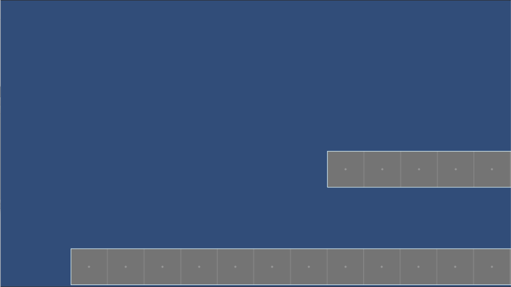
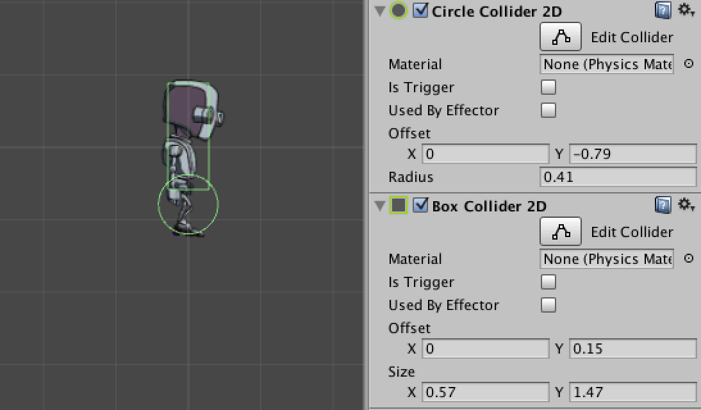

Este tutorial sigue los pasos definidos en el siguiente video: http://unity3d.com/es/learn/tutorials/modules/beginner/2d/2d-controllers?playlist=17093, sin embargo se han corregido algunas instrucciones que no estaban claras.
1. Descarga los siguientes archivos: Prototype_Sprites.zip y RobotBoy_Sprites.zip.
2. Crea un nuevo proyecto en Unity y selecciona la opción de 2D.
3. Importa los assets de Prototype_Sprites.zip dentro de tu proyecto. Estos assets deberían de estar importadas como texturas de tipo Sprite, si no recuerdas como importarlas de esa manera puedes visitar el tutorial de Física 2D en los pasos 3 al 7.
4. Con estos assets recrea la siguiente escena:
Ambos sprites son PrototypeGrey16x01

5. Crea un Game Object vacío que se llame Character.
6. Al Character agregale como componentes Sprite Renderer y Rigidbody 2D.
7. Dentro de Rigidbody 2D coloca como limitación la rotación en el eje z y el atributo de Interpolate con el valor de Interpolate.
8. De RobotBoy_Sprites.zip importa la hoja de RobotBoyIdle.png, esta hoja contiene la animación del robot en el estado de Idle.
9. Selecciona la hoja dentro de tu ventana Project y en el inspector selecciona como Texture Type: Sprite (2D and UI) y en Sprite Mode: Multiple.
10. Posteriormente da click en el botón Sprite Editor y se mostrará una nueva ventana, si te pide que apliques los cambios antes de abrir la ventana selecciona aplicar.
11. La ventana que se muestra es la ventana del Sprite Editor, dentro de esta ventana puedes hacer las modificaciones a los Sprites de tu juego, en el lado superior derecho selecciona Slice, esta herramienta te funciona para hacer los cortes de las hojas de Sprites, en Type selecciona Grid By Cell Size.
12. En Pixel Size coloca un tamaño de 275 x 275, este valor lo obtienes a partir de la especificación que te da la persona que hizo el arte, el decide el tamaño de cada sprite.
13. Selecciona al Game Object Character y arrastra el primer Sprite de la animación RobotBoyIdle_0 al atributo Sprite del componente Sprite Renderer.
14. Agrega al Character los siguientes Colliders: a. Circle Collider 2D y b. Box Collider 2D. Ajusta los Colliders para que se muestren como en la siguiente imagen.

15. Al darle click a Play notarás que el personaje a traviesa la plataforma, agrega los Box Collider 2D a cada una de las plataformas.
16. Agrega al Character el componente Animator, selecciona las siguientes configuraciones para el componente, Apply Root Motion: No y Update Mode: Animate Physics.
17. En la ventana Project crea un asset del tipo Animator Controller, colocale de nombre CharacterAnimatorController.
18. Asigna al componente Animator que creaste en el paso 16 el controlador que acabas de crear.
19. Al hacer doble click en CharacterAnimatorController verás que se abre la ventana de Animator, esta ventana se utiliza para controlar los estados de animación del personaje.
20. Con la ventana de Animator abierta, abre la ventana de Animation. Esta ventana se utiliza para especificar las propiedades de una animación.
21. Selecciona a tu personaje Character y da click en el botón Create, nombra la animación como Idle. Verás que la animación Idle aparece dentro de la ventana de Animator, esto se debe a que Idle se considera como un estado de animación.
22. Con la ventana de Animation abierta, arrastra los Sprites de RobotBoyIdle_0 hasta RobotBoyIdle_29 a la ventana de Animation.
23. El artista que diseño está animación nos indica que es de 24 cuadros por segundo. Ajusta dentro de la ventana de Animation las propiedades de los Samples a 24.
24. Presiona Play y verás al personaje animado.
Es posible que en los Sprites del personaje notes algunos artefactos de compresión. Estos aparecen por que Unity está importando la imagen a un menor tamaño y esta aplicando una compresión.
Para corregir estos artefactos de compresión, hay que modificar los parámetros de importación de Unity.
25. Dentro de la ventana de Project selecciona el Sprite sheet (RobotBoyIdle.png) de la animación de Idle.
26. Modifica las opciones de importación para que Generate Mip Maps este desactivado y el Max Size este como 2048, presiona Apply para que se apliquen los cambios.
Nota: La imagen de arriba es un gif, que por su naturaleza aplica una compresión al contenido, en Unity notarás el cambio de una forma más drástica.
27. Agrega la hoja de sprites RobotBoyRun.png y realiza el mismo tratamiento que hiciste de importanción de la hoja de Idle, es decir, cortar los sprites en cuadros de 275 x 275 y asegurarte de que el tamaño de importanción sea de 2048 así como deselecciona la opción de generar Mip maps.
28. Una vez que se hayan creados los cuadros de sprites, crea una nueva animación utilizando los sprites, el nombre de la animación será Run.
29. Si observas tu ventana del Animator Controller (con el Character seleccionado), podrás notar que aparece el estado de Run. Recuerda que el componente Animator te permite controlar los estados del objeto.
30. Ahora estableceremos una conexión del estado Entry al estado de Run, para hacer esto haz click derecho sobre Entry, selecciona Make Transition y posteriormente selecciona el estado Run. De esta manera hemos establecido que del estado Entry puedes pasar al estado Run, el estado Entry es el primer estado por el cual pasa el personaje.
31. Lo que vamos a hacer es colocar al estado de Run como el estado predeterminado de inicio, para hacerlo, hacemos click derecho sobre el estado Run y seleccionamos Set as Layer Default State. Damos click en ejecutar y veremos al personaje corriendo.
32. Selecciona el estado Idle y conviértelo como el estado predeterminado del personaje.
33. Selecciona la flecha de transición de Entry y eliminala, en Mac puedes hacerlo con, Command + Backspace.
34. Ahora vamos a crear una transición de Idle a Run.
35. Dentro de Unity podemos establecer distintos parámetros para que un objeto pase de una animación a otra, para hacerlo tenemos que agregar parámetros al Animator Controller. En la parte izquierda de la ventana del Animator Controller podrás ver dos tabs, selecciona el tab de Parameters y agrega un parámetro de tipo Float con el nombre de Speed.
36. Selecciona la trancisión (flecha) que va del estado Idle al estado Run. En el Inspector, en la parte inferior podrás encontrar un listado de Conditions, agrega una nueva condición en donde el Speed se mayor que 0.01. Con esto lo que estamos estableciendo es que cuando el personaje este en el estado Idle y su velocidad sea superior a 0.01 pase al estado de Run.
37. Crea una transición del estado Run al estado Idle, selecciona la transición y coloca como condición que la velocidad se menor que 0.01. Esta transición lo que hará es que cuando el personaje deje de moverse regrese al estado Idle.
38. Lo que ahora vamos hacer es mover al personaje para que aumente su Speed y de esta manera podamos ver que la transición de animaciones se está ejecutando. Crea un componente que se llame RobotCharacterController.cs y adjuntalo al Character.
39. En el componente RobotCharacterController.cs debes de tener el siguiente código. El código lo que hace es implementar un comportamiento de movimiento similar al que vimos en el tutorial de Física 2D, la diferencia es que en este script el movimiento se está modificando utilizando la propiedad de Velocity del Rigidbody 2d (Documentación de Rigidbody2D.velocity). Así mismo se establece el valor del Speed del componente Animator Controller.
40. Al hacer Play tal vez notes que el personaje no pasa a su animación al instante sino que espera a que se termine la animación previa y después se pasa a la que le corresponde.
41. Para evitar este problema, seleccionamos cada una de las transiciones Idle -> Run y Run -> Idle y quitamos las opción de Has Exit Time y en Settings > Transition Duration, lo ponemos en 0.
42. Ahora lo que vamos a realizar es que el personaje salte y cuando este en el aire se va a ejecutar una animación de estar cayendo o de estar subiendo, Ojo: no es una animación de salto, es una animación de no estar en el suelo (por ejemplo: una caída).
43. Para realizarlo tenemos que agregar a nuestro componente RobotCharacterController.cs las variables bool _grounded (línea 24), Transform GroundCheck (línea 29), float _groundRadius (línea 34) y LayerMask WhatIsGround (línea 39). El script con estás modificaciones puedes consultarlo aquí.
44. Una vez que hemos creado las variables, en el método FixedUpdate tenemos que revisar si estamos tocando el suelo, para hacer esto tenemos que agregar la siguiente línea _grounded = Physics2D.OverlapCircle(GroundCheck.position, _groundRadius, WhatIsGround); (línea 59). Este estado tenemos que enviarlo al Animator, para hacerlo agregamos debajo de _grounded = ..., la línea _animator.SetBool("Ground", _grounded); (línea 61). El script con estás modificaciones puedes consultarlo aquí.
45. Una vez que ya hicimos las modificaciones en el RobotCharacterController.cs tenemos que agregar un GameObject vacío al Character, este GameObject indicará la posición en donde se hará la revisión por la colisión con el suelo.
46. Selecciona el Character y en la ventana de Hierarchy dale click en Create > Create Empty Child.
47. Cambia al GameObject su nombre para que sea GroundCheck y en el ícono del cubo a lado del nombre en la ventana del Inspector, dale click a la flecha que apunta hacía abajo y selecciona un color, verás que se crea una referencia visual a la posición que tiene el objeto.
48. Mueve el GroundCheck de tal manera que quede alíneado a la posición en dónde están los pies del Character.
49. Una vez que ya tenemos el GroundCheck en los pies del Character necesitamos establecer en el componente de RobotCharacterController.cs las capas con las cuales va hacer interactuar.
50. En la parte superior derecha da click en Layers y selecciona Edit Layers.
51. Agrega una capa que se llame Player.
52. Selecciona al Character y en el Inspector debajo de su nombre vas a ver un select con el nombre de Layer y el valor predeterminado es Default, cambia el valor por Player.
53. En el componente RobotCharacterController.cs del Character modifica los valores de WhatIsGround para que el único valor que no este seleccionado sea Player.
54. Arrastra el GameObject vacío de GroundCheck al atributo GroundCheck.
55. En la ventana del editor del Animator del Personaje agrega el parámetro de Ground.
56. Dale Play a tu escena y nota que sucede en con el parámetro de Ground en la ventana del Animator.
57. Ahora crearemos el código para que el personaje pueda saltar. Abre el código de RobotCharacterController.cs y ve a la línea en dónde se le pasa al Animator el valor de grounded. Debajo envía al Animator el valor del Velocity en el eje y, para hacer esto agrega la siguiente línea. _animator.SetFloat("vSpeed", gameObject.GetComponent<Rigidbody2D>().velocity.y);. El script con estás modificaciones puedes consultarlo aquí.
58. Creamos el método Update en dónde revisamos si el Character está en el suelo y se ha presionado la tecla de la barra espaciadora, si se cumple esta condición entonces le indicamos al Animator que el jugador ya no está en el suelo y agregamos una fuerza al Rigidbody2D en dónde se aumente la fuerza vertical.
public float JumpForce = 400;
void Update() {
if (_grounded &&
Input.GetKeyDown(KeyCode.Space))
{
_animator.SetBool("Ground", false);
gameObject.GetComponent
}
}
El script con estás modificaciones puedes consultarlo aquí.
Cuando presiones la barra espaciadora deberías de ver al Character saltando
59. Una vez que ya tenemos el personaje saltando vamos a ponerle sus animaciones de salto. Importa la hoja RobotBoyJump.png, coloca su tamaño de 2048 y desactiva la generación de los mipmaps, realiza el corte de los sprites con el mismo parámetro que los sprites anteriores, 275 x 275.
60. Selecciona el personaje y abre la ventana de Animation, en esta ventana crea 11 animaciones con el nombre de Jump_{número de animación}.
61. En cada una de las animaciones vas a arrastrar un solo frame del Sprite sheet de RobotBoyJump.png, selecciona tu primera animación y arrastra en ella el frame 5 (considera que empieza con 0) y lo colocas en Jump_1, posteriormente seleccionas el frame 7 y lo arrastras a Jump_2, continuando ese intercalado llena hasta Jump_11.
62. Abre el Animator Editor del componente Animator y notarás que están los 11 estados de las animaciones de Jump. Elimina lo estados.
63. En el Animator Editor crea un parámetro con el nombre de vSpeed, que es la variable que estabamos enviando desde el componente RobotCharacterController.cs.
64. Da click derecho sobre el canvas del Animator Editor y selecciona Create State > From New Blend Tree colocale el nombre de JumpAndFall.
65. Crea una transición de Any State a Blend Tree.
66. Selecciona la transición y está se va a ejecutar cuando Ground sea false.
67. Crea una transición de Blend Tree a Idle.
68. La transición se va a ejecutar cuando Ground sea igual a true.
69. Dale doble click al Blend Tree JumpAndFall.
70. Selecciona el BlendTree, en el inspector selecciona el Blend Type de 1D.
71. En el listado de Motion da click en agregar y selecciona Add Motion Field. Agrega 11 Motion Fields.
72. Arrastra las 11 animaciones que creaste a los Motion Fields, empezando por el Jump_11 y disminuyendo hasta el Jump_1, de tal manera que el Jump_11 tenga como Threshold el valor de 0 y el Jump_1 tenga el Threshold de 1.
73. Ahora necesitamos indicarle en que momento va a estar en el punto más alto del salto. Desactivamos el valor de Automate Threshold, posteriormente en la curva de transición (el recuadro azúl que aparece arriba de Motion). Indicamos como valor inferior -10.8 y valor superior2.16.
74. Finalmente, en el recuadro de Motion colocamos los siguientes valores para los Jump.
| Motion | Threshold |
| Jump_11 | -10.8 |
| Jump_10 | -8.11 |
| Jump_9 | -7.13 |
| Jump_8 | -6.2 |
| Jump_7 | -5.4 |
| Jump_6 | -4.6 |
| Jump_5 | -3.7 |
| Jump_4 | -2.9 |
| Jump_3 | -1.7 |
| Jump_2 | -0.03 |
| Jump_1 | 2.16 |
75. Podrás ver que el personaje salta y cae muy lento, esto se puede corregir modificando la física del mundo, para modificar la física del mundo ve a Edit > Project Settings > Physics 2D y coloca el valor de Gravity en el eje Y con un valor de -30.
Creación de un controlador para personajes 2D. Obtenido de http://unity3d.com/es/learn/tutorials/modules/beginner/2d/2d-controllers?playlist=17093